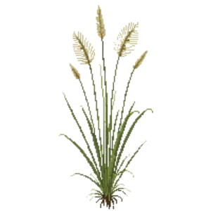

Blue Grama 'Blonde Ambition'
Bouteloua gracilis 'Blonde Ambition'

Blue Grama 'Blonde Ambition' is a grass for edging, mid-border, suited to full sun and loam or sandy soil, flowering Jul, Aug, Sep.
| Type | Grass |
|---|---|
| Mature height | 75 cm |
| Spread | 45 cm |
| Aspect | full sun |
| Foliage | Deciduous |
| Hardiness | USDA 4a-9a |
| Pollinator-friendly | No |
| Pet-safe | Yes |
Where to use it in a border
At around 75 cm, it sits best along the front edge, where a low, spreading habit reads best. Give it about 45 cm of room to spread, roughly 2 to the metre when planted in a drift. It is hardy across USDA zones 4a to 9a, so check it suits your area before planting.
It appears in our lists of full sun, sandy soil, pet-safe plants.
Flowering through the year
Good companions
Plants that share its conditions and style, chosen to complement its place in the border:
- Little Bluestemto flower when it does not
- Little Bluestem 'Standing Ovation'to flower when it does not
- Little Bluestem 'The Blues'to flower when it does not
- Nodding Onionto edge in front
- Prairie Smoketo edge in front
- Pussytoesto edge in front
Garden styles
Meadow Native Xeriscape (low-water)
See Blue Grama 'Blonde Ambition' set in a full border, with spacing and companions worked out for your own conditions, in Border Builder.
Sources
Bloom timing and hardiness drawn from:
- Lady Bird Johnson Wildflower Center (wildflower.org, 2026-05)
- NC State Extension (plants.ces.ncsu.edu, 2026-05)